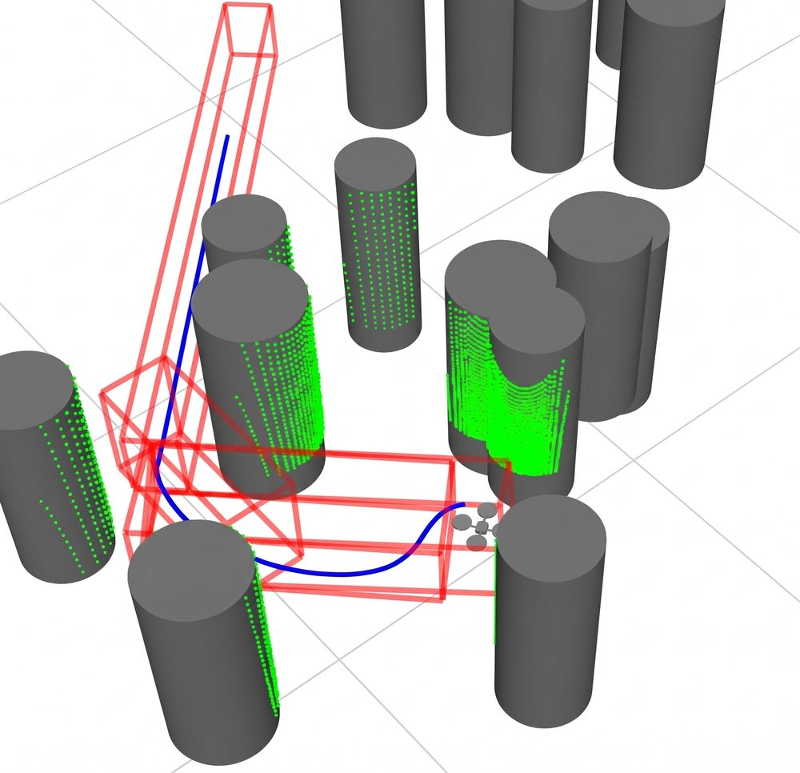
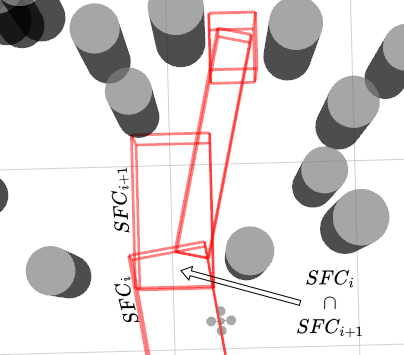
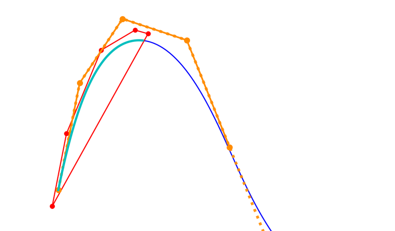
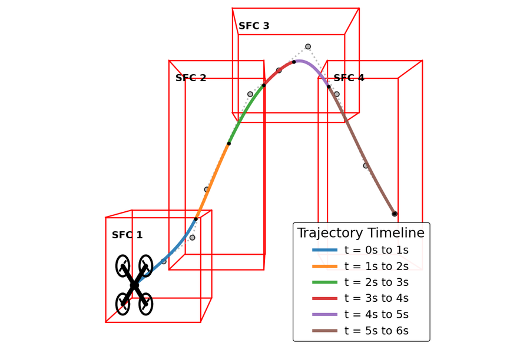

BYU MAGICC Lab · Feb 2026 – Present
COAST: Corridor-Optimized Aerially-Safe Trajectories
A real-time path and trajectory planner for UAVs that keeps the obstacle-avoidance guarantees of safe flight corridors while running fast enough to replan in flight.
Alejandro Pelaez & Randal W. Beard · Submitted to the 2027 American Control Conference (ACC) · 2nd Place, SHPE 2026 National Poster Competition

Motivation
An online trajectory planner decides how an aircraft physically gets from A to B using only its onboard sensors. Existing planners tend to pick one side of a trade-off: some give mathematical guarantees at the expense of computation time, while others are fast but give up those guarantees. COAST is built to get both: a highly efficient planner that provably respects obstacle boundaries.
Approach
Current B-spline planners either keep hard corridor guarantees and pay for it in computation, or swap them for soft penalties to run in real time. COAST splits the problem into two stages to keep both:
- Front end: corridors. An A* search builds a chain of geometrically simple safe flight corridors: rectangular prisms that resize to fit the obstacles around them.
- Back end: control-point QP. A quadratic program (OSQP) places the B-spline control points to minimize snap, which keeps the flight smooth.
- Guaranteed containment. Corridor intersections aren't convex, so COAST uses the finite support property of B-splines: each piece of the curve depends only on a few control points, and bounding those keeps the spline inside the corridors. This gives a formal geometric guarantee.
- MINVO kinodynamic bounds. Transforming control points to the minimum-volume (MINVO) basis wraps the curve much more tightly than the raw control polygon, so velocity and acceleration limits are enforced without being overly conservative.



Pipeline
Multirotors use dynamically resized corridors for cluttered and indoor flight. Fixed-wing aircraft use fixed-size corridors with obstacles expanded to account for turn radius.
Results
Validated in high-fidelity simulation: the quadrotor's physics and low-level control run in ROSflight, with ROScopter as the autopilot tracking COAST's trajectories, through forests of randomly placed obstacles fed by simulated LiDAR. Ten independent trials were run at each obstacle density.
| Density | Success | Optimize (ms) | Replan (ms) | Travel time (s) | Path length (m) | Jerk (m/s³) | Vel. / accel. violations |
|---|---|---|---|---|---|---|---|
| 5% | 100% | 0.89 | 2.46 | 47.48 | 109.79 | 64.58 | 0% / 0% |
| 10% | 90% | 1.10 | 4.25 | 50.16 | 119.68 | 129.20 | 0% / 0% |
The QP solves in about 1 ms and full end-to-end replanning averages under 5 ms. Not one commanded setpoint violated the velocity or acceleration limits at either density, which validates the MINVO bounds end to end. COAST reached the goal without contact in 10/10 trials at 5% density and 9/10 at 10%, where the one failure was a stall.
Poster
Presented at the 2026 SHPE National Convention in Indianapolis, where it placed 2nd in the national undergraduate research poster competition. BYU's Electrical & Computer Engineering department wrote about the award ↗.

Next steps
- Release COAST as a pip-installable open-source library, and possibly a ROS package
- Extensive hardware flight tests indoors and outdoors
- Head-to-head comparisons against other state-of-the-art planners
- Extend the ACC paper into a journal publication